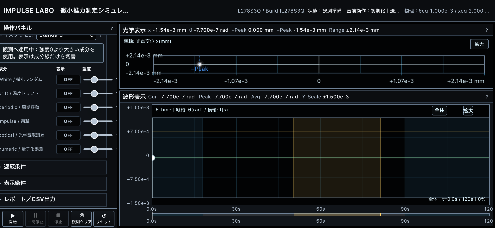
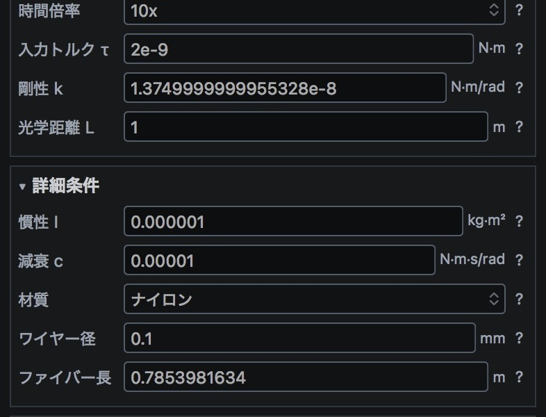
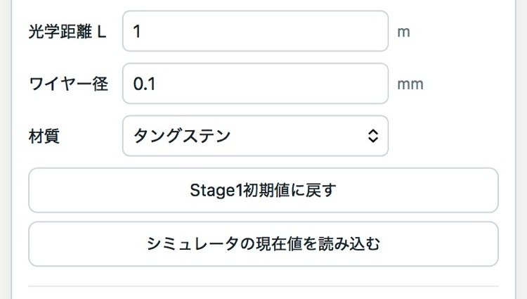

IMPULSE LABO / MICRO-THRUST MEASUREMENT
操作マニュアル
装置設定、ノイズ・遮蔽条件、観測の流れ、結果の見方、PDF・CSV出力、3Dページとの連携までを整理します。
01
画面構成
PCでは左側に操作パネル、右側に光学表示・波形表示を配置します。Mobileでは同じ内容を上から順に表示し、開始・停止などの操作ボタンを画面下部に固定します。
操作パネルは「基本条件」「観測条件」「詳細条件」「ノイズ条件」「遮蔽条件」「impulse実測(未検証)」「表示条件」「レポート/CSV出力」「詳細ヘルプ」の折りたたみセクションで構成されています。各項目の「?」ボタンから、その場で入力範囲や意味を確認できます。

02
観測開始前の確認
装置モデル：「仮想トーションバランス」と「キャベンディッシュ1798」から選べます。仮想モデルでは材質・ワイヤー径・ファイバー長から剛性kが自動計算され、キャベンディッシュモデルでは史実仕様の固定値が使われます。
材質・ワイヤー径・ファイバー長：詳細条件内にあります。材質(タングステン/石英/ナイロン)ごとにせん断弾性率と温度係数が異なり、剛性k、および温度ドリフト成分の振幅の両方に実際に反映されます。剛性k欄自体は自動計算された値の表示専用で、直接編集はできません。
入力トルクτ・慣性I・減衰c・光学距離L：測定対象の力(τ)、応答の速さ(I・c)、角度から変位への換算(L)を決めます。減衰cを大きくすると、振動が収まりやすくなります(overdamped)。
モード：校正・ノイズ確認・重力測定・カスタム測定など、目的に応じたプリセットです。それぞれ推奨される観測時間・入力条件が自動設定されます。8種類あるモードは、それぞれ「何と比べて装置の感度を確認するか」が違います。下の一覧で、身近な例えとあわせて説明します。
- 校正
- 大きさの分かっている力(既知の入力トルク)を装置に与えて、正しく反応するかを確認します。キッチンスケールを使う前に、重さの分かった分銅で目盛りを合わせるのと同じです。
- ノイズ確認
- 推力(τ)を一切与えず、ノイズだけを観測します。録音する前に部屋の暗騒音(周りの雑音)を測っておくようなものです。
- 重力測定
- 近くに置いた重いもの同士が、実際の万有引力でどれだけ引き合うかを測ります。地球上のどんな物同士にも働く、架空ではない実在の力を検出対象にする、いわばミニ版のキャベンディッシュ実験です。
- カスタム測定
- 入力トルクτなど条件をすべて自分で設定して試すモードです。「もし推力がこれくらいの大きさだったら検出できるか」を自由に試したいときに使います。
- 静電気力
- 下敷きを髪でこすった後に紙くずを引き寄せる、あの静電気の力を検出対象にします。重力よりも条件(湿度や距離)で変わりやすいため、判定は「推定評価」という位置づけになります。
- 繰り返し試験
- 同じ条件で何度も測り直して、毎回同じような結果になるか(再現性)を確認します。体重計に何度も乗って、同じ体重が表示されるか確かめるのと同じ考え方です。
- 検出限界チェック
- わざと弱い信号を使って、「これ以上小さいと、この装置ではもう見分けがつかない」という限界を探るモードです。
- 蚊飛翔(かひしょう)
- 蚊が近くを飛ぶときに生じる、ごくごく小さな空気の乱れ・振動と同じくらいの大きさの外乱を再現します。マイクロニュートンという単位がどれくらい小さいか、蚊の羽ばたき程度だと考えると実感が湧きます。

03
設定を変えるとどうなるか
装置の反応は、身の回りのものに例えると分かりやすくなります。4つの設定について、変えると何が起きるかを見ていきます。
① 材質を変える — ブランコの鎖の硬さ
剛性k(ねじり系の硬さ)は、ブランコを吊る鎖の硬さに似ています。鎖が硬い(kが大きい)ほど、同じ力で押してもブランコはあまり揺れません。鎖が柔らかい(kが小さい)ほど、小さな力でも大きく揺れます。
② 減衰cを変える — ブランコを手で止めるか、放っておくか
減衰cは、ブランコが揺れたあとにどれだけ早く止まるかを決めます。cを大きくすると、まるで手で軽く支えながら止めるように、揺れが早く収まります(overdamped、行き過ぎずにじわっと収束)。cを小さくすると、放っておいたブランコのように、しばらく振動し続けます。
③ 遮蔽レベルを上げる — 魔法瓶に入れる
遮蔽は、装置を魔法瓶に入れるようなものです。何も入れず机の上に置いた飲み物(遮蔽なし)は、部屋の温度変化にすぐ影響されます。魔法瓶(遮蔽・強)に入れれば、外の温度が多少変わっても中身の温度はほとんど変わりません。
④ 入力トルクτを変える — 声の大きさと騒がしい部屋
入力トルクτは、検証したい推力の「声の大きさ」、ノイズはその部屋の「周りのざわめき」にあたります。声(τ)がざわめき(ノイズ)より十分大きければ、はっきり聞き取れます(S/N比が高い=検出可能)。声が小さいと、ざわめきに埋もれて聞き取れません(検出不可)。遮蔽を強くする・ノイズ成分を減らすことは、部屋を静かにして声を聞き取りやすくすることに相当します。
04
操作ボタン
開始／一時停止／停止：観測を開始・中断・終了します。観測クリアは表示中の波形・解析結果だけを消去し、条件設定は保持します。リセットはすべての設定を初期値に戻します。
05
ノイズ・遮蔽条件
ノイズ条件では、White(熱雑音)・drift(温度ドリフト)・periodic(周期性ノイズ)・impulse(衝撃)・optical(光学読取誤差)・numeric(量子化誤差)の6成分を、それぞれ表示ON/OFFと強度で調整できます。表示のON/OFFは成分線の見た目だけを切り替え、観測・解析には強度が0より大きい成分がすべて適用されます。
遮蔽条件では「弱・標準・強」のレベルを選べます。レベルが上がるほど断熱・防振構造が積み増され、drift成分などが低減しますが、White・periodicは原理的に遮蔽の効果を受けません(詳しくは解説ページを参照)。
06
波形・光学表示の見方
光学表示は、光点変位x(mm)を横軸にとった散布図です。波形表示は縦軸をθ(rad)、横軸を時間t(s)にとった時系列グラフで、±Peakのラベルが振れ幅の最大・最小を示します。黄色い帯は主評価窓(判定に使う時間範囲)を表します。
07
観測の流れ
- 装置モデル・材質・入力条件・ノイズ/遮蔽条件を設定します。
- 観測方式(AUTO推奨時間、または手動)と最大観測時間を選びます。
- 「開始」を押すと観測が始まり、波形がリアルタイムに描画されます。
- 観測時間が満了するか、手動で「停止」すると、S/N比・判定結果が確定します。
08
結果表示
観測完了後、S/N比とその判定(検出可能／条件付き評価／検出不可 等)、Baseline(ノイズのみの基準観測)との差分、残留・終盤の補助確認結果が画面下部に表示されます。総合判定は、主評価窓の信号とBaselineの状態を統合したものです。
09
PDF・CSV出力
「レポート/CSV出力」から、観測条件・解析値・判定理由をまとめたPDFレポートと、生データを含むCSVをダウンロードできます。PDFには機械・光学条件(慣性・減衰・材質・ワイヤー径・ファイバー長)や遮蔽条件、Noiseのプリセット・seed値も記録され、後から観測条件を再現・確認できます。
10
3Dページとの連携
「装置3D」ページには、シミュレータと同等の装置パラメータ入力欄があります。3Dページを開いた直後は常に標準初期値が表示され、シミュレータで設定した値を使いたい場合は「シミュレータの現在値を読み込む」ボタンで明示的に取り込みます。

11
表示上の注意
本シミュレータは架空の装置を対象としたシミュレーションです。判定結果は入力条件と内部モデルに基づく計算結果であり、実験値として扱う場合は、実際の装置条件・校正記録・環境ログを別途記録してください。impulse実測モードはブラウザのセンサーAPIを使う端末センサー機能で、端末やブラウザの対応状況により、センサー値を取得できない場合があります。
NEXT
実際に検証する
操作方法を確認したら、実際にシミュレータで試してみてください。